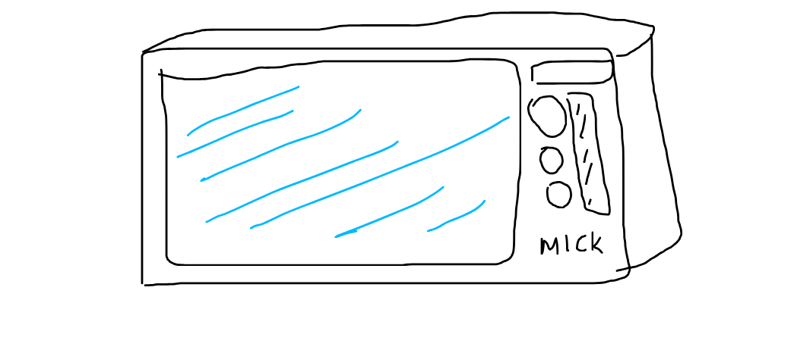
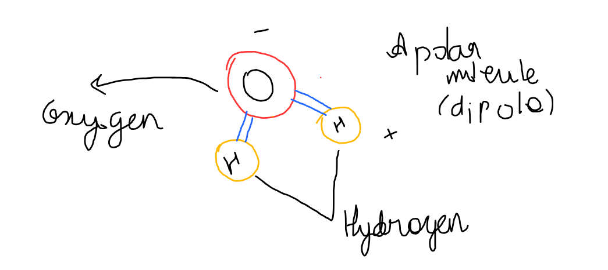
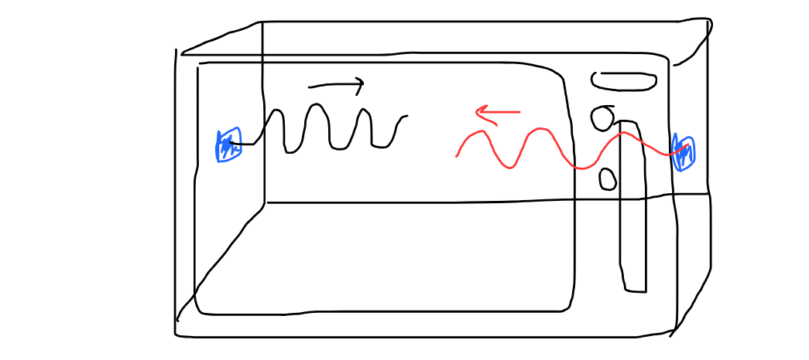
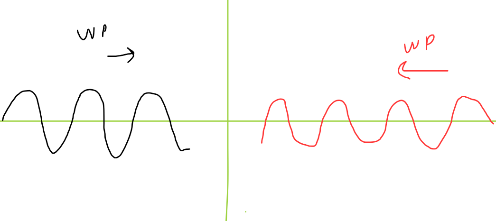
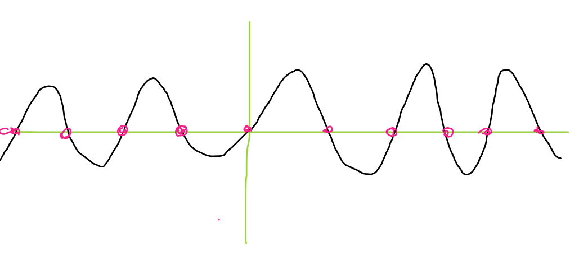

Microwave!!, To many wavey wavey waves
In this section we are going to talk deeply how about a microwave works and how does it behave so abnmomrammyl
In this section we are going to talk deeply how about a microwave works and how does it behave so abnmomrammyl

Usually when we talk about microwave we see something in our kitchen being cooked or our food being heated. But have you wondered why you soup gets some cold and some hot areas? And why does a donut jelly inside is so hot but outisde the donut is so cold?
As you can see this is a transversal wave, where the energy is propogated perpendicular to the direction where the wave motion is occuring. But the question is why do we need for microwave???

This is a very rough very very rough diagram of oxygen and hydrogen molecules being combined and forming a single water moleucle
Usually here, we could see that, Due to high electrongeativity of the Oxygen atom compared to Hydrogen atom and their non linearlty there is a charge induced and also forming of a dipole!.
A dipole is something like , same but opposite charges together something like this
So here as you can see the same magnitude of charge but opposite sign forms a dipole Now Water molecule also behaves like a dipole and when it comes in contact with a microwave, just like in electric field if it would come in contact it would flip up and down,(as they try alligining with the micro waves and they try to rotate.) (billions time per second), making heat generationg, same thing happens when the water molecule reatct with a microwave, Their interaction is similar causing the water molecule to gain kinetic energy making the water molecule's energy more and more and then the heat comes from the friction forces between the molecules, since as they rotate and bump into neighbour molecules trying to allign, that rotational energy converts into heat energy due to collision of the molecule.
I understand, since your attention span is so cooked, lemme have a animation right here (ahhm this is gonna be hell for me)
Now every molecule rotates like this but when they collide or interact this rotational energy gets converted into Heat Energy and that our food heats
there are some cool animations and theoritical explanations which i am going to give you though cute diagrams.
Since Oxygen molecules have a dipole induced in them hence they have a charge polarity which means when they react with the microwave they try to align themselves, and due to that alignment many rotations and rotaitonal motions are prouced, hence makeing them gain a rotational energy and then , when these molecules rotates ad flips at billions per second, and the moment they collide with their neighbout they loose this rotational eergy and hence this rotational energy fue to firctional and collision loss gets covnerted into Heat energy heating the particle and food and water surrounding it.
Usually microwave have 2 micro wave generator on opposite end as shown below


Since in the microwave there are 2 wave generator, the both waves get interefer and convers into a single oscillation thingy which looks like wave but oscillates up and donw
Now as you could see above thats the result of inference, and below is the diagram where you could see the formation of nodes , which are the points which doesn't move at all

DUe to this pehnomena , the points which doesn't move at all, there are no rotation of molecules there hance no heat enegy being producd hence the food remains cold
Yup this is the reason for the cold spots in your soup
The first is to put a soup in a microwave and not where it is hottest and coldest and hot and cold
Try putting and boiling your water in you microwave, after its done, try to pokeit with a spoon(be careful) Due to super heating of water, the gas molecules due to surface tension of water just stays there, since microwave doesn't cool bulkly, so tearing that surface might reuslt in burst of energy